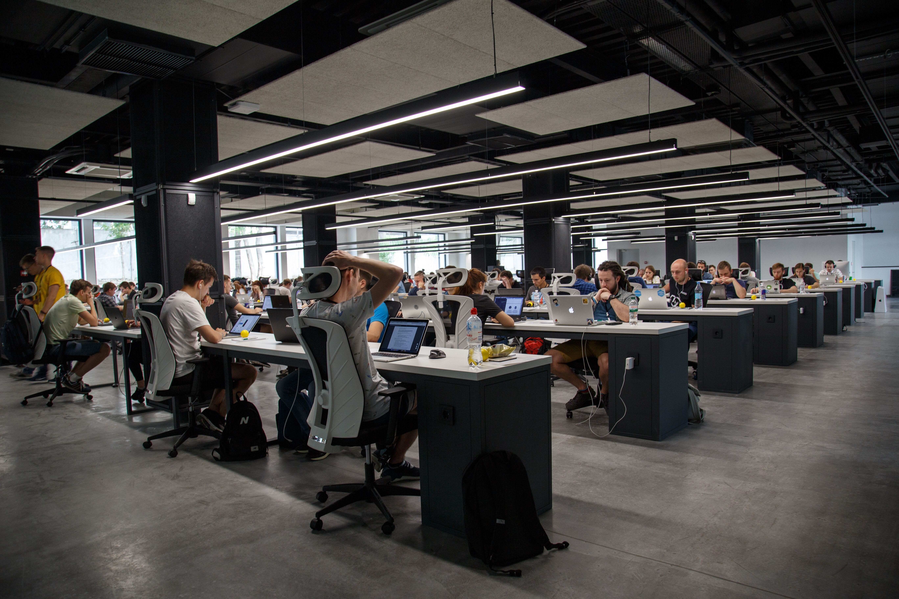

About
Hi there 👋 I'm Justin Seby, A polyglot software engineer who is passionate about Machine learning, AI, Medical Imaging. ⚡
Fun fact: I strongly believe in the Chaos theory: Even in unpredictable environments with seemingly random oddities and irregularities lies a predictable & sensible pattern not seen initially. 🔭 I’m currently working on: Mathematics for Machine Learning: Linear Algebra from Imperial College London

This research focuses on intelligent skin cancer diagnosis based on a balanced dataset of benign and malignant skin moles images. Read this paper.
Work Experience
• Sysvine Technologies
July 2021 - Present
Software Engineer II
Working as Frontend
Developer in HI-TECH banking solutions team.
• Infosys
Test Engineer (System Engineer)
- Dec 2019 - March 2021
• Angular 7 based front-end application development
• Designing apps using angular portal and saved as JSON in
database
• Styling of the portal using SASS preprocessor and by Angular
material components
• Good expertise in scripting using Load
Runner Vugen, JMeter executing scenarios in Controller and
preparing reports by analyzing the Response time issues.
• Expertise in Performance Testing of Web based applications.
System Engineer Trainee - Aug 2019 - Dec 2019
• Undergone Infosys training in advanced Python, data structures,
Object oriented programming, Oracle DB
• Infosys certified Python developer– Advanced level python
certification
• Infosys certified Python associate – Beginner level
• Infosys certified java SE8 developer– Beginner level
• Software Performance engineering Certification
• IAUTO TECH LLP
Dec 2017 - Dec 2018
Research Engineer
My bachelors I got an opportunity to work as a Research engineer
at a startup incubated in our college Incubator cell. During this
tenure, I had an opportunity to work with different Machine
learning problems. It was a part time opportunity.
Education
APJ Abdul Kalam Technological University
B.Tech Computer Sciece and Engineering (2015 - 2019)• Completed my bachelors in Computer science and engineering with an 8.3 CGPA on a scale of 10.
• During 4th year, Accomplished an institute wise rank 2 in computer science with an SGPA of 9.25 out of 10.
Intermediate, Higher Secondery
Board of Secondary Education, Kerala (2013 - 2015)• Courses undertaken Physics, Chemistry and Mathematics and Computer Science.
• Scored 100% in 12th State Board Examination.
• Secured State wise 1st price in Mathematics exhibition on Number Chart.

Internships
• BINALYTO DATA SERVICES ( Artificial Intelligence intern)
March 2021 - June 2021
▪ Creating an image segmentation model for the connectomics project which
can segment the neural cell boundaries and the cell surface.
▪ Analyzing data, developing predictive algorithms, designing, and
recommending code algorithms using advanced machine learning algorithms
• Sands Lab Private Limited
July 2016
Software development InternI have completed my summer internship at SandsLab private limited, Infopark Koratty. During the internship time I have managed to complete SDLC process with software development team.
Certifications and Licenses
• Machine Learning - Stanford University
Issued through Coursera. This course provides a broad idea to machine learning, datamining, and statistical pattern recognition. Topics include: (i) supervised learning (parametric/non-parametric algorithms, support vector machines, kernels, neural networks). (ii) Unsupervised learning (clustering, dimensionality reduction, recommender systems, deep learning). (iii) Best practices in machine learning (bias/variance theory; innovation process in machine learning and AI).• MedTech: AI and Medical Robots – University of Leeds
This online course explored human robot interaction and the fascinating world of robotics and artificial intelligence in healthcare. Issued through futurelearn.
• Mathematics for Machine Learning: Linear Algebra – Imperial College London
This research focuses on intelligent skin cancer diagnosis based on
a balanced dataset of benign and malignant skin moles images.• The Data Scientist’s Toolbox – John Hopkins University
There are two sections to this course. The first is a conceptual introduction to the ideas behind converting actionable knowledge from data. The second is a practical introduction to the tools that used in the programs like version control, markdown, git, GitHub, R, and RStudio. Issued through Coursera.
• AWS Cloud Technical Essentials – AWS
This research focuses on intelligent skin cancer diagnosis based on
a balanced dataset of benign and malignant skin moles images.
• Programming data structures and algorithms – Indian Institute of Technology (IIT) Madras.
Projects
Please visit my GitHub profile to find more projects.
-
Heart Attack analysis And Prediction
Analysis & Predict Heart Attack based on Age, Gender, No. of disease they have and some other aspects. The data set is available from Kaggle.
-
Sudoko solution from images - Computer-Vision
In this project, We are solving a sudoku puzzle from an image of an unsolved puzzle using different Machine learning techniques.
-
A Machine Learning Approach For Industry Classification
We put forward an approach to classifying and categorizing resumes using different machine learning algorithms, SVM classifier, Naïve Bayes, and Logistic Regression.
-
Sentiment Analaysis on Covid-19 Twitter Data
The experiments have been conducted on the collected data related to COVID-19 tweets from all over the world. This study was conducted to understand how people from different infected countries cope with the situation.
SWEVEN - Voluntary Organization
Sweven Consultants is my non-profit initiative to help high school and college students in reaching their full potential. With programs in programming and Information technology, mastering English and communication skills, expert guidance on career paths, enabling Senior citizens with technological knowledge, Svenen aims to bring about positive impacts whereever possible.